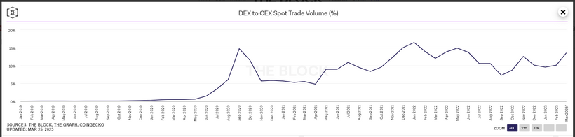
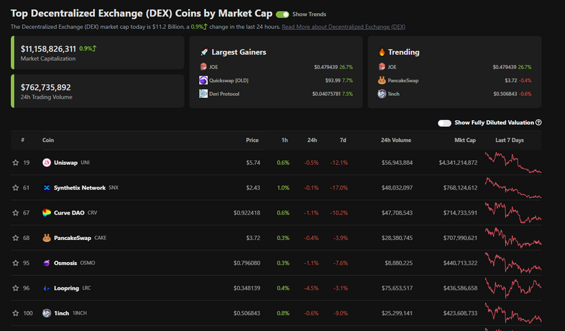
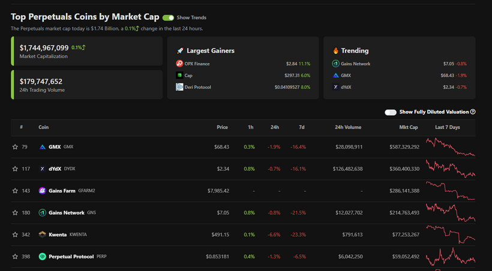
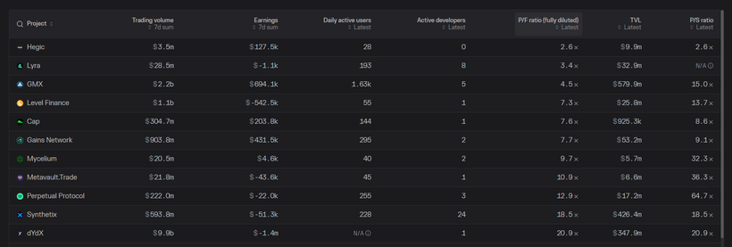
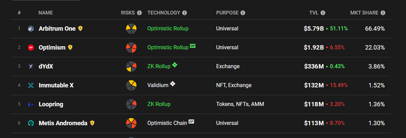

有看開此欄的朋友都會知，我認為持有大幣的risk reward ratio是最好的。早兩個月寫的專欄提及過，別以為小幣一定比大幣有更大升幅而走去滿手持有小幣。回看歷史，大幣升幅也不俗，而且穩定性高得多。不過，總會有讀者好奇想知我持有哪些小幣，這次就來分享一下。
1. DEX（GMX、DYDX、GNS）
自從FTX事件發生後，無論大戶或散戶都被CEX的counterparty risk嚇怕。那些最risk averse的人，要不永不再玩crypto，就是放棄CEX，繼而跑到DEX去交易。如果看數據，會發現FTX事件發生後，DEX佔大市成交額節節上升。如下圖所示：

DEX to CEX spot volume ratio由10%以下升至16%，足足多了60%人由CEX跑到DEX中。FTX倒閉時，幣市當然下跌，逆市上升的，就是DEX token如DYDX、GMX、GNS等等。
你可能會問，DEX不是UNI、CAKE、OSMO、1INCH、SUSHI那些嗎？是的，這些都是些很有代表性的DEX，不過大部分都是swap形式，而不是能trade derivatives如perpectual的DEX。Swap形式即例如你想買ETH時，你看不到orderbook，只能直接由USDT換成ETH，買賣差價、滑價只能估算出來，你不會事先知道。而大家平日炒賣股票、期貨、外匯時都一定會看到orderbook，如買一買二價、賣一賣二價。

為什麼我看好DEX時不選swap類型的呢？因為大部分人在DEX買賣幣後，都會搬走到自己的冷錢包中，只是一次性買賣，即swap形式的客戶群體為低頻交易者或者HODLer，而非炒家。CEX出意外時，受影響的根本不是長揸者，而是短炒的人。所以，擔心CEX風險而離開CEX的人都只會跑去有orderbook、能trade derivatives、能trade perpetual的DEX如DYDX、GMX、GNS等。

重申，如果你是HODLer，請不要把幣留在交易所中，而是冷錢包。上年FTX爆時，網上很多盲毛恥笑我連冷錢包也不懂用卻出來教crypto… 我無言了。事實上，我HODL的幣都在冷錢包中，我在CEX的錢都是用來每天交易幾千次的資本。
好了，那能做perp的DEX也不只是DYDX、GMX、GNS，還有PERP、SNX那些，為什麼挑前3者呢？要選幣然後長揸，看的就不是短線因子了，而是fundamental。我在Twitter有提過，最簡單的FA方法，也就是看PE ratio、mcap / TVL ratio等等。縱觀不同DEX，GMX及GNS都比較抵買，因此我在$15便大手掃入了GMX。而持有DYDX則不是因為它估值便宜，而是DYDX是成交額最高的perp DEX，即龍頭，放在倉底也是合理的。我相信DEX to CEX volume ratio只會不斷上升，不會下跌。
基本面數據如下：

始終DEX沒有人治問題，能去掉大部分在CEX會遇到的問題。此刻純粹liquidity不夠，bid ask spread較大，但這肯定是會被慢慢解決的。
2. ARB（Arbitrum）
Layer2這個概念相信不必再解釋，過去1年在不同專欄、節目、訪問都瘋狂提及這個concept。Layer2最有名的，不外乎是Arbitrum及Optimism。前者市佔達67%，後者則是22%。不過這兩隻幣久久沒上市，兩年前想有exposure也難。OP在上年年中在Bybit上市，而大哥ARB只是在上週在才大CEX上。

ARB值得持有嗎？幣圈使用Layer2是肯定的，費用便宜且速度快。不過，一隻資產前景好不等於它會升，在去年年中的Patreon已提過，很多散戶也是輸在不懂計算內在值。內在值可以真的上升，但市價下跌，那你看中它的fundamental也沒有用。
以ARB為例，以其他layer2的FA來估算估值，用TVL去project mcap及FDV，fair price約為$1.2-2左右，因此，每逢ARB接近$1，便可以賭賭。
3. SSV
ETH鏈不斷經歷升級，愈來愈多人stake ETH以賺取yield。市場現時最受歡迎的ETH staking pool為Lido，但Lido並非完美。SSV的出現則是用以解決問題，為幣圈提供更安全的staking infrastructure，因而在$10-15左右掃入了SSV。
以上便是幾隻我有持有的小幣，每隻佔投資組合1%左右。有很多人會認為看好某幣便要all in，乃大錯特錯。早幾篇專欄提到2023投資組合時，crypto buy and hold只佔10-20% portfolio，所以一隻幣1%已經很多了。
後話：Buy and hold賺的是market beta，即始終要大市上升，較為被動；若要賺取alpha，請做long short或者其他quant trade方法。